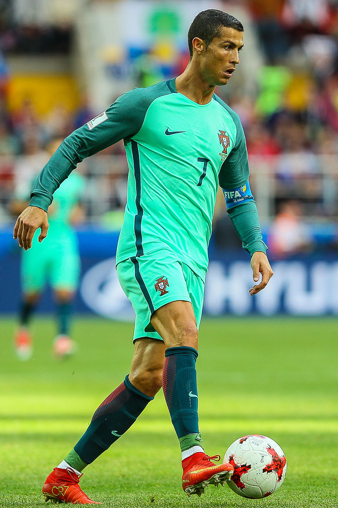
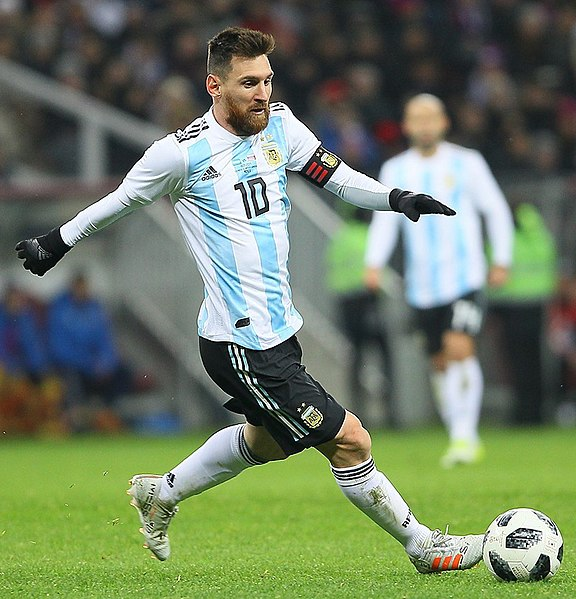

The Beautiful Game

Cristiano Ronaldo
 Luka Modric
Luka Modric

Lionel Messi
The sport of soccer is widely considered as the most popular sport
in the world. Played by over 200 countries, and 240 million
people, the sport has become known to many as "The Beautiful Game".
Originally played in the schools of Britain in the 19th century, led to the formation
of soccer clubs and the Football Association (FA). It did not take long for the game to spread globally
to Netherlands, Denmark, Argentina, France, Chile, and more. As a result, in 1904, the International Federation of Football (FIFA)
was founded and the first FIFA World Cup was held in 1930.
Today, the World Cup (2014) attracted the eyes of over 3 billion people worldwide. With an average
attendance of 53,0000 people, the World Cup will host 32 teams to represent their respective nations.